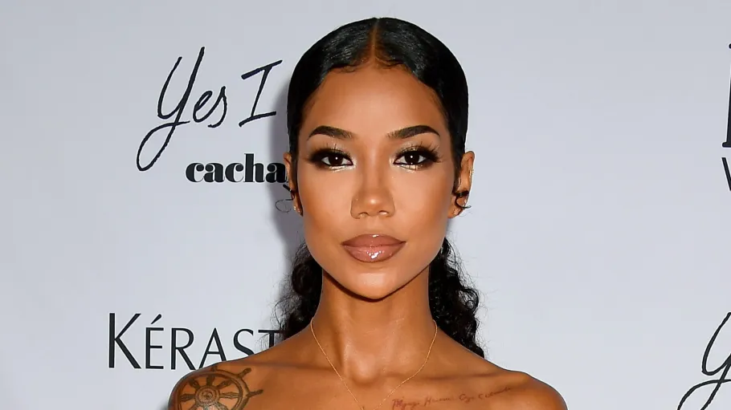
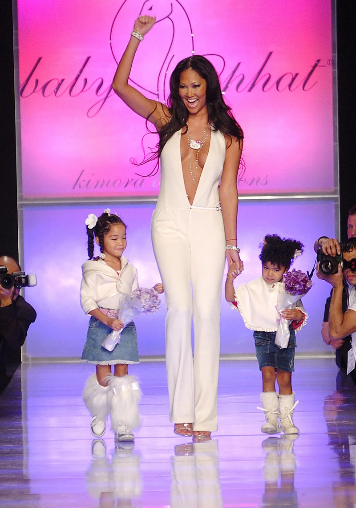

Jhene Aiko

Her music is soothing, calming and has gotten me through a lot of hard times in my life. I have been lucky enough to see her in concert various times, and her vibe is truly unmatched! I admire how she has turned pain into power and has done it so gracefully.
Mariah The Scientist

I love her music because she fully embraces her femininity and is extremely vulnerable with her choice of words. Her music is emotional but intentional, and I also really love her aesthetic!
Kimora Lee Simmons
